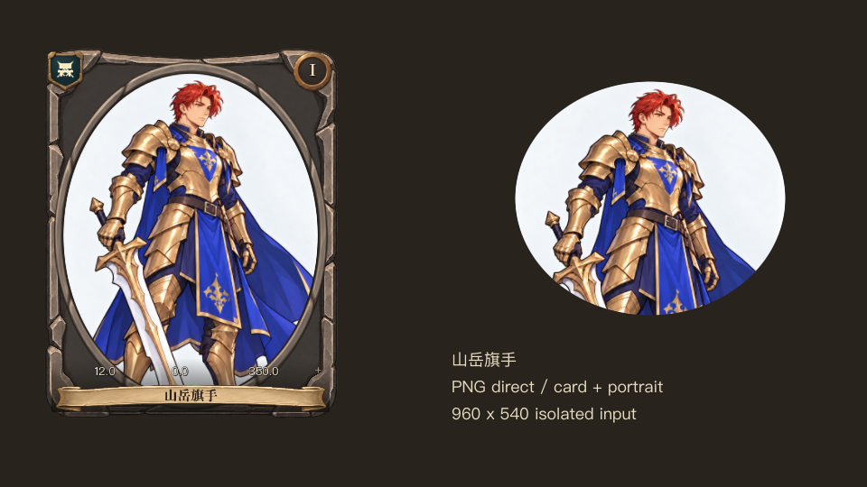
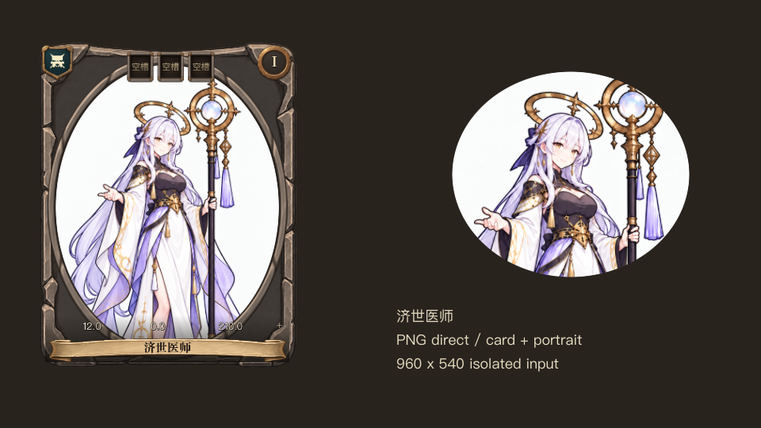
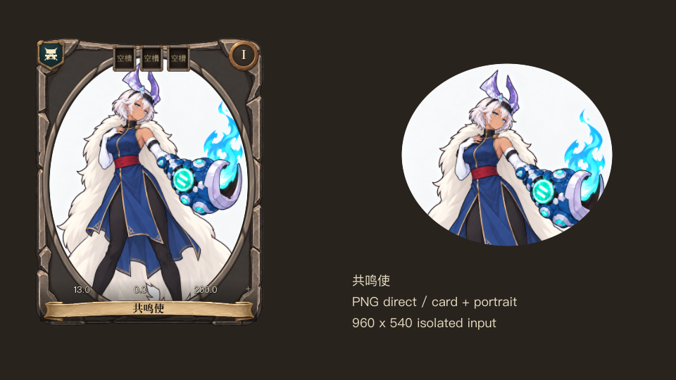

<!doctype html><html lang="zh-CN"><meta charset="utf-8"><meta name="viewport" content="width=device-width,initial-scale=1"><title>三张定稿 · 游戏内取景</title><style>body{margin:0;background:#24201d;color:#eee8dc;font:16px/1.5 system-ui}main{max-width:1000px;margin:auto;padding:20px}h1{font-size:24px}h2{font-size:19px}img{display:block;width:100%;height:auto}a{color:#b9ccf6}figure{margin:0 0 24px}p{color:#cbc2b3}</style><main><h1>三张定稿 · 游戏内取景</h1><p>正式角色资源直接读取完整 PNG，保留原背景。左侧为正式卡片组件，右侧为小肖像；960×540 隔离检查。</p><figure><h2>山岳旗手</h2></figure><figure><h2>济世医师</h2></figure><figure><h2>共鸣使</h2></figure></main></html>
